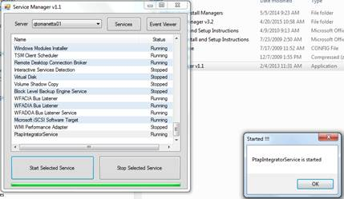

Bounce Process if TIBCO or StandAloneWinSvcs
- Login to stager usomawvdntst01.test.intranet
- navigate to D:\Inetpub\AdminScripts\ServiceManager\ServiceManager v1.2
- Open ServiceManager.exe and Check the inventory and select the servers and highlight the service as shown below.
- Click on Stop Selected and ensure that Service is stopped and then click on Start Selected.

Services.msc on each server
- Start/run/ services.msc
- Highlight service you want to stop and then click Stop the service on the left hand side.
- Wait for service to stop and start the service again as shown below.